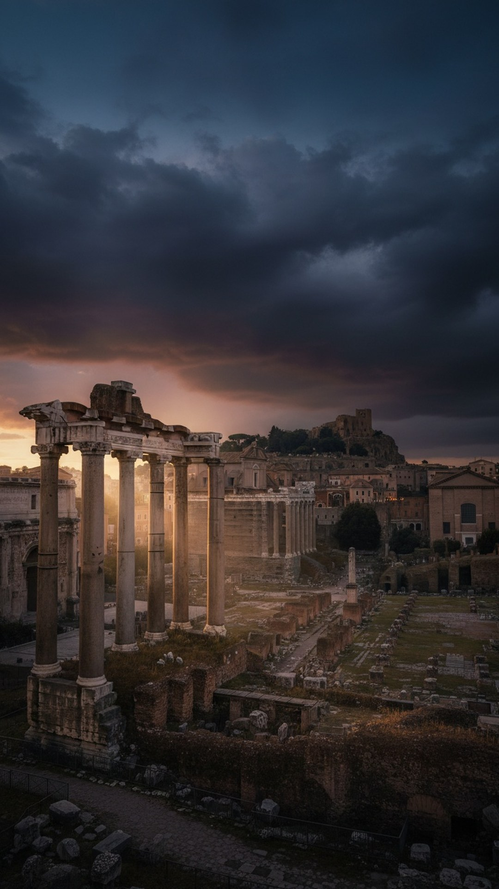

A missing body. A grieving crowd. A respected witness who swears under oath that he met the risen man on the road, that the man gave him a message for his followers, and that he ascended to heaven. The authorities declare him a god.
That is not Easter morning. That is the death of Romulus, founder of Rome, as recorded by Livy around 27 BC, decades before a single Gospel was written. This is part 11 of THE BLUEPRINT, and it moves the investigation to the city that ran the world the Gospels were born into. As always: primary sources on the table, fake parallels killed on sight.

A priestess sworn to chastity, and a god of war
Rome's founding story opens with a forbidden birth. Rhea Silvia was a Vestal Virgin, a priestess bound by law to chastity, conscripted by the usurper king Amulius precisely so she could never produce an heir. She bore twins anyway and named the god Mars as the father. A consecrated virgin, a divine father, a child the king tries to destroy: the twins are ordered drowned in the Tiber, and Romulus survives to found the city that kills the king.
Now the part almost nobody quotes. Livy, Rome's own historian, hedges the divine paternity in the same sentence he reports it. Rhea Silvia named Mars as father, he writes at 1.4.2, 'either because she truly believed it, or because a god was a more honorable author of her fault.' Rome's official historian openly floats the naturalistic explanation. And an honest note before anyone shouts virgin birth: this is a divine paternity claim, not a virginal conception. Livy says she was taken by force. The Gospel nativity is a different kind of story, and the investigation says so.
The storm at the Goat's Marsh
The stranger material is the ending. Livy 1.16: Romulus is reviewing his troops at the Campus Martius when a violent storm wraps him in cloud. When the light returns, the throne is empty. No body, ever. Cicero, writing even earlier, says he vanished during a sudden darkening of the sun and 'was believed to be placed among the number of the gods.' Plutarch, in his Life of Romulus, adds that the light of the sun failed and night came down with peals of thunder before the founder disappeared. Darkness at the death of a divine king. Written by pagans, about Rome's founder, before Matthew described darkness over the land at the crucifixion.
The rumor Rome tried to bury
Both Livy and Plutarch preserve a second version. Livy admits some whispered that Romulus had been 'torn limb from limb by the senators.' Plutarch is more specific: the senators fell on him in the temple of Vulcan, cut his body in pieces, and carried it out hidden in the folds of their robes. He even records the crowd's reaction, accusing the patricians of 'imposing a silly tale upon the people' to cover a murder. Two stories, side by side, in Rome's own sources: an ascension into heaven, or a political assassination with a hidden body. Keep both on the table. The ancients did.
One respected man swore under oath that he met the risen founder on the road. The murder rumor died that day, and Rome gained a god.
One witness, under oath
What settled the crisis was testimony. Proculus Julius, a patrician Livy calls a man of weighty authority, stood before the assembly and swore that at dawn the risen Romulus had descended from heaven and appeared to him on the road. Livy records the message: 'Go, tell the Romans that it is the will of heaven that my Rome shall be the capital of the world.' In Plutarch's fuller version, Romulus appears 'fair and stately to the eye as never before, arrayed in bright and shining armour,' explains that he came from the gods and has returned to them, and closes: 'I will be your propitious deity, Quirinus.' A road encounter with the risen dead, a commission for the followers, a new divine name. Plutarch adds that no man contradicted him, and suspicion of the senators evaporated. He does not say Proculus was put up to it. He just places the sworn miracle in the chapter after the murder rumor and lets his readers think.
The cult was real, and it was not small
This was not a folk tale. Romulus was worshipped as the god Quirinus with a temple on the Quirinal hill dedicated in 293 BC, an annual festival, the Quirinalia, every February 17, and a dedicated high priest, the Flamen Quirinalis, one of only three priests of the highest rank in Roman state religion. The other two served Jupiter and Mars. Rome slotted its ascended founder into the top tier of its own pantheon. The physical anchors are still there: the Lapis Niger in the Forum, a black-stone shrine over one of the oldest Latin inscriptions in existence, which some ancient writers said marked the spot of Romulus's death, and postholes of Iron Age huts on the Palatine, dated to the 8th century BC, exactly where Rome preserved a thatched 'hut of Romulus' as a relic for a thousand years.
The world the Gospels were born into
Here is why this matters more than any single parallel. In 44 BC, Julius Caesar was assassinated, and that July a comet blazed for seven days. Suetonius records that it 'was believed to be the soul of Caesar, who had been taken up to heaven.' The Senate deified Caesar, and his heir Augustus took the title divi filius: son of god. That title was stamped on coins circulating in every market in Judea while Jesus preached. A calendar inscription from 9 BC even calls the birthday of Augustus the beginning of 'good news,' euangelion, the exact word Mark chose for his opening line. And the ancients saw the overlap themselves: Justin Martyr, defending Christianity around 150 AD, argued that Christian claims were 'nothing different' from the sons of Jupiter who ascended, and Tertullian named Romulus outright, insisting Christ's ascension was better evidenced. The comparison is not a modern internet invention. It is a second-century church debate.
The honest difference
Now the knife on our own claim. Romulus did not die and rise. In one tradition he was murdered and stayed dead; in the other he was taken up alive. There is no burial, no tomb, no return in a body that had died. Scholars call this genre apotheosis, or translation, and it is not the same claim as resurrection. The scholarly fight is live: Richard C. Miller argues in the Journal of Biblical Literature and a Routledge monograph that the empty tomb belongs to the same translation-fable genre, counting some twenty structural parallels, while N.T. Wright argues the resurrection claim is categorically different from every pagan ascension. There is also a dating wrinkle that cuts both ways: Livy wrote before the Gospels, but Plutarch's full version is roughly contemporary with them, and both traditions were growing in the same Augustan air. What is beyond dispute is the template Rome already trusted: missing body, sworn eyewitness, ascension, divine title, state cult.
Strip away everything uncertain and this remains: the empire that executed Jesus already worshipped a founder with a missing body, a sworn road-encounter witness, and an ascension into heaven, and had done so for centuries. Paul preached resurrection to people who had a category for it, stamped on the coins in their pockets.
So the question writes itself. When Mark opened his Gospel with 'Son of God,' every reader in the empire already knew another son of god, and another ascended founder. Template, counterclaim, or coincidence? Follow THE BLUEPRINT as the investigation continues.
This is Part 11 of 23 in THE BLUEPRINT, an investigation into the pre-Christian figures who carried the pieces of the Jesus story. See every part of the series here.
Before you go
7 books the Vatican doesn't want you reading. Free PDF — the texts they cut, with sources. Joined by 140+ Inner Circle members.
No spam. Unsubscribe anytime.
Go deeper
The Hidden Canon, Vol. I — Enoch. Jubilees. Thomas. Mary. Judas. 90 pages, 14 chapters, every receipt cited. The books your Bible quietly removed.
Read the Canon →Books that informed this investigation
As an Amazon Associate, Hidden Epoch earns from qualifying purchases. Cost to you: nothing.
Research safely
The VPN we use to research without being tracked. First 3 months free.
Get NordVPN →